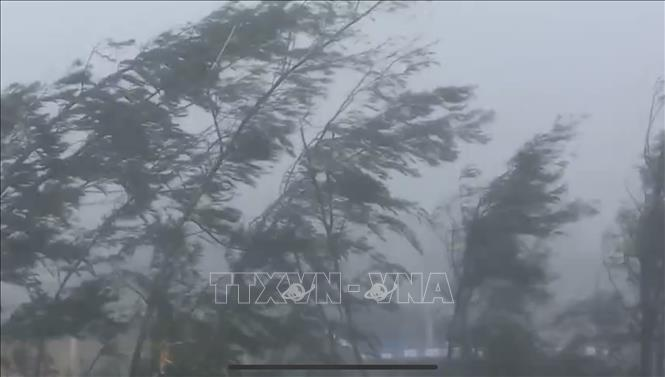

2 giờ sáng 7/9, Trung tâm Điều hành tác nghiệp khí tượng thủy văn tại tầng 12, trụ sở Tổng Cục khí tượng thủy văn (Bộ Tài Nguyên và Môi trường) vẫn sáng đèn như cái tên thường được gọi: "căn phòng không bao giờ tắt điện". Bão số 3 khiến các cán bộ, dự báo viên của Trung tâm khí tượng thủy văn Quốc gia không có một giây phút ngơi nghỉ. Căng mình tập trung dõi theo mắt bão, họ đang phải giải những “bài toán cân não” của siêu bão lịch sử 30 năm mới xuất hiện tại Việt Nam.
Điều hành ca trực trong đêm 6/9, Giám đốc Trung tâm Dự báo khí tượng thủy văn Quốc gia Mai Văn Khiêm không ngơi tay chỉ dẫn các dự báo viên đọc số liệu trên màn hình theo dõi đường đi và các chỉ số của bão số 3. Trong phút giây nghỉ ngơi hiếm hoi bên chén trà đặc, ông cho biết, công tác dự báo phục vụ bão số 3 đã được triển khai từ rất sớm và nhận được sự quan tâm của toàn bộ hệ thống chính trị. Thủ tướng Chính phủ, Phó Thủ tướng Chính phủ, Ban Chỉ đạo phòng thủ dân sự Quốc gia. Bộ trưởng Bộ Tài nguyên và Môi trường đã có những chỉ đạo sát sao đối với các đơn vị dự báo khí tượng thủy văn. Toàn bộ hệ thống các trạm quan trắc khí tượng thủy văn của Tổng cục Khí tượng thủy văn, đặc biệt là các radar thời tiết ven biển tại khu vực bị ảnh hưởng trực tiếp của bão số 3 đã thực hiện quan trắc tăng cường, bổ sung phục vụ dự báo bão. Từ thời điểm trước 48 giờ khi bão số 3 đổ bộ vào đảo Hải Nam (Trung Quốc) các cơ quan dự báo của quốc tế và Việt Nam đều có chung nhận định bão sẽ không giảm nhiều về cường độ khi đi vào vịnh Bắc Bộ cũng như khi tiến sát đất liền Việt Nam. Các cơ quan dự báo của quốc tế đều có chung nhận định, bão sẽ duy trì cường độ rất mạnh khi di chuyển trên vịnh Bắc Bộ (cấp 13-14) và khi đổ bộ vào đất liền Việt Nam (cấp 12, trên cấp 12). Dự báo của Trung tâm Dự báo khí tượng thủy văn Quốc gia về cường độ cũng như hướng di chuyển của bão số 3 sát với hướng di chuyển và cường độ thực tế của bão trên Vịnh Bắc Bộ cũng như khi đi vào đất liền, và có sự tương đồng với dự báo của các cơ quan dự báo quốc tế Nhật Bản, Trung Quốc, Hàn Quốc, Hồng Kông (Trung Quốc). Trung tâm Dự báo khí tượng thủy văn Quốc gia cũng đã có 2 lần thảo luận với Trung tâm Dự báo bão khu vực của Nhật Bản; 2 cuộc thảo luận với cơ quan Khí tượng Trung Quốc trong đợt dự báo bão số 3 để chia sẻ thông tin dự báo, kinh nghiệm chuyên gia và số liệu quan trắc. Với tính chất phức tạp từ đường đi, cường độ, phạm vi hoạt động… của siêu bão số 3, Trung tâm Dự báo khí tượng thủy văn Quốc gia quyết định cứ mỗi giờ đồng hồ lại cung cấp một bản tin nhanh cập nhật diễn biến mới nhất bão số 3, mỗi ba giờ đồng hồ lại có tin khẩn cấp về bão. Ngoài ra còn có các thông tin khác cảnh báo về mưa lớn, lũ quét, sạt lở đất tại những khu vực bị ảnh hưởng. Để có những bản tin dày đặc này, cứ 10 phút, các dự báo viên lại cập nhật ảnh mây vệ tinh, ảnh radar và thông tin từ hàng chục trạm quan trắc … để phân tích hướng di chuyển, tốc độ, cường độ của bão. Bão càng gần bờ thì mỗi một sự thay đổi, dù là nhỏ thôi cũng cần được tính toán, phân tích cẩn thận. Tranh thủ động viên các dự báo viên ca trực nỗ lực theo dõi sát sao hướng đi, diễn biến của bão để ghi nhận dù là những chuyển động nhỏ nhất của cơn bão nhiều diễn biến phức tạp này, ông Mai Văn Khiêm chia sẻ: "Công việc của các cán bộ khí tượng thủy văn là thế; luôn sẵn sàng ứng trực 24/24h, không để sót lọt, chậm thông tin về thiên tai, bởi chúng tôi hiểu, nếu xảy ra sự chậm trễ, dù chỉ tính bằng giây, sẽ dẫn đến những hệ lụy khôn lường". Với dự báo bão số 3 rất mạnh, hoàn lưu rộng, thời gian trước, trong và sau bão, Trung tâm Dự báo khí tượng thủy văn Quốc gia đã thực hiện nghiêm túc quy định về Quy trình kỹ thuật dự báo, cảnh báo hiện tượng khí tượng thủy văn nguy hiểm, tăng cường các bản tin dự báo, cảnh báo; cập nhật, cung cấp đầy đủ, kịp thời bản tin dự báo thiên tai và dự báo tác động của bão số 3 phục vụ tốt công tác chỉ đạo phòng chống thiên tai cho Ban Chỉ đạo Phòng thủ dân sự Quốc gia, Bộ Nông nghiệp và Phát triển nông thôn, các bộ, ngành, địa phương và nhân dân biết chủ động phòng, tránh nhằm giảm thiểu thiệt hại của thiên tai. Bên cạnh đó, đảm bảo hoạt động ổn định hệ thống công nghệ thông tin, thiết bị phụ trợ dự báo; cung cấp thông tin về bão số 3, các hình thái thời tiết liên quan có khả năng xảy ra hoặc do ảnh hưởng của bão trên website của Trung tâm Dự báo khí tượng thủy văn Quốc gia tại địa chỉ nchmf.gov.vn, trên ứng dụng di động phục vụ người dùng khai thác; cung cấp các sản phẩm dự báo đến các đơn vị theo quy định. Trung tâm tiếp tục ban hành bản tin nhanh, tin bão khẩn bão số 3 để chính quyền và người dân địa phương biết và chủ động ứng phó.
Sáng 7/9, khi chỉ còn cách vài giờ là bão số 3 sẽ đổ bộ vào khu vực ven biển Quảng Ninh-Hải Phòng, Phó Thủ tướng Trần Hồng Hà cùng đoàn công tác đã có mặt tại Ban Chỉ huy tiền phương phòng, chống bão số 3 đóng tại thành phố Hải Phòng để nghe báo cáo tình hình ứng phó với bão số 3 tại các tỉnh, thành phố: Quảng Ninh, Hải Phòng, Thái Bình. Phó Thủ tướng Trần Hồng Hà nhận định, bão số 3 là cơn bão rất mạnh, vùng ảnh hưởng lớn, sau khi đi vào vùng biển Quảng Ninh - Hải Phòng, cấp độ bão vẫn giữ nguyên. Vì vậy, cần tiếp tục duy trì cảnh giác, tập trung cao độ. Quyết liệt thực hiện các biện pháp chống bão, các địa phương chịu ảnh hưởng trực tiếp của bão số 3 đã ban hành các biện pháp mạnh để giảm thiểu tối đa thiệt hại về người. Để ứng phó bão số 3, từ 6 giờ 6/9, các tỉnh, thành phố Quảng Ninh, Hải Phòng, Thái Bình, Nam Định, Ninh Bình, Thanh Hóa, Nghệ An đã ban hành lệnh cấm biển. Ngày 7/9, Cục Hàng không Việt Nam đã yêu cầu 4 cảng hàng không khu vực phía Bắc tạm ngừng tiếp thu, khai thác tàu bay. Cụ thể, tại Cảng hàng không quốc tế Vân Đồn (Quảng Ninh) tạm ngừng tiếp thu, khai thác tàu bay từ 4 - 16 giờ ngày 7/9/2024. Tại Cảng hàng không Cát Bi (Hải Phòng) tạm ngừng tiếp thu, khai thác tàu bay từ 5 - 16 giờ ngày 7/9/2024. Tại Cảng hàng không quốc tế Nội Bài (Hà Nội) ngừng tiếp thu, khai thác tàu bay từ 10 - 19 giờ ngày 7/9/2024. Tại Cảng hàng không Thọ Xuân (Thanh Hóa) ngừng tiếp thu, khai thác tàu bay từ 12 - 22 giờ ngày 7/9/2024. Các lực lượng quân đội, công an, xung kích phòng chống thiên tai và người dân đã vào cuộc ứng phó với bão. Quân đội nhân dân Việt Nam huy động gần 458.000 cán bộ, chiến sĩ (bộ đội thường trực, dân quân tự vệ, dự bị động viên) và hơn 10.100 phương tiện các loại để ứng phó với bão số 3. Trong số này, có hơn 400 xe đặc chủng, hàng nghìn ô tô, tàu thuyền và 6 máy bay trực thăng. Các Quân khu 1, 2, 3, 4, 5; Bộ tư lệnh Thủ đô Hà Nội đã hỗ trợ nhân dân chằng chống nhà cửa và di dời khỏi khu vực nguy hiểm. Bộ Công an đã ban hành 3 Công điện và tổ chức họp trực tuyến để chỉ đạo các đơn vị trực thuộc Bộ và Công an 35 địa phương tập trung ứng phó khẩn cấp với bão số 3 và mưa lũ; tập trung huy động lực lượng, phương tiện cho công tác phòng, chống bão và mưa, lũ; tổ chức thường trực, ứng trực 100% quân số tại các địa bàn chịu ảnh hưởng trực tiếp, khu vực xung yếu để sẵn sàng triển khai ngay các biện pháp bảo đảm an ninh trật tự, phòng, chống bão, lũ, xử lý kịp thời các tình huống phát sinh. Bộ đã huy động hơn 100 nghìn người tham gia trực, ứng trực phòng, chống bão số 3 và mưa, lũ. Chính quyền các địa phương cũng liên tục ban hành các văn bản khuyến cáo người dân hạn chế ra đường, đặc biệt là tại những khu vực chịu ảnh hưởng trực tiếp của bão số 3.